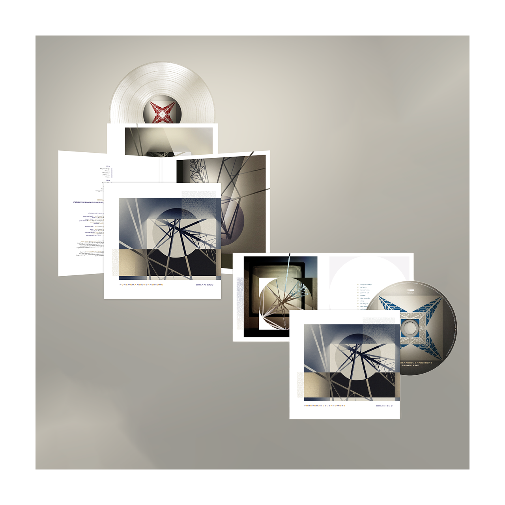
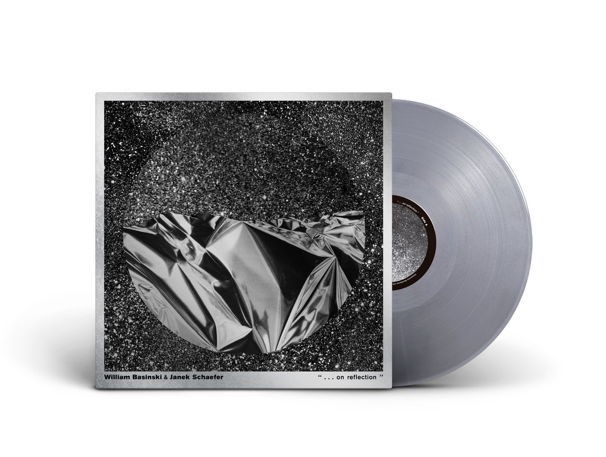

New Arrivals for the month of October include the brand new Brian Eno solo album "FOREVERANDEVERNOMORE", as well as the new colored limited edition William Basinski and Janek Schaffer collaboration vinyl, "...On Reflection"
Brian Eno HAS announced his new album ForeverAndEverNoMore, the ambient pioneer and producer extraordinaire's first LP featuring mostly songs with vocals in nearly 17 years. And guess who pre-ordered a LOT of copies :)
One of the most appreciable features of William Basinski's work is his pessimism, sorrow and anguish in the face of a world that offers no security, but also shows an individually creative path of making oneself, despite all circumstances. This specific album demonstrates a provocative attitude towards human insecurity derived from the crisis of an existence that seeks prosperity in a world full of misery. - Miguel Cisneros, Bandcamp Contributor